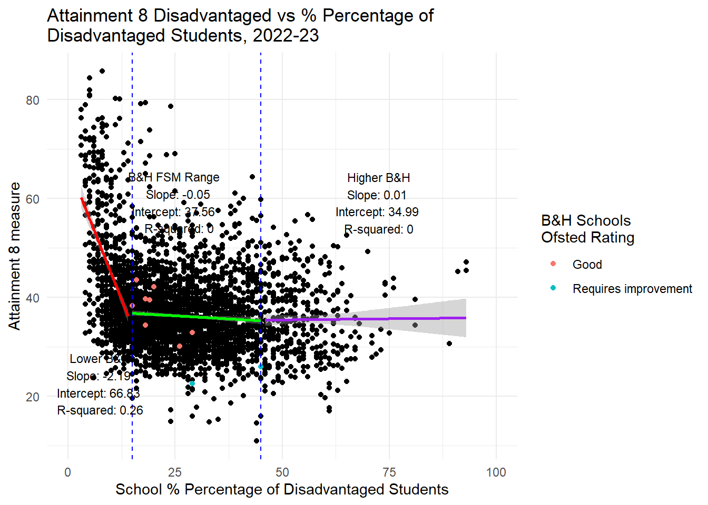
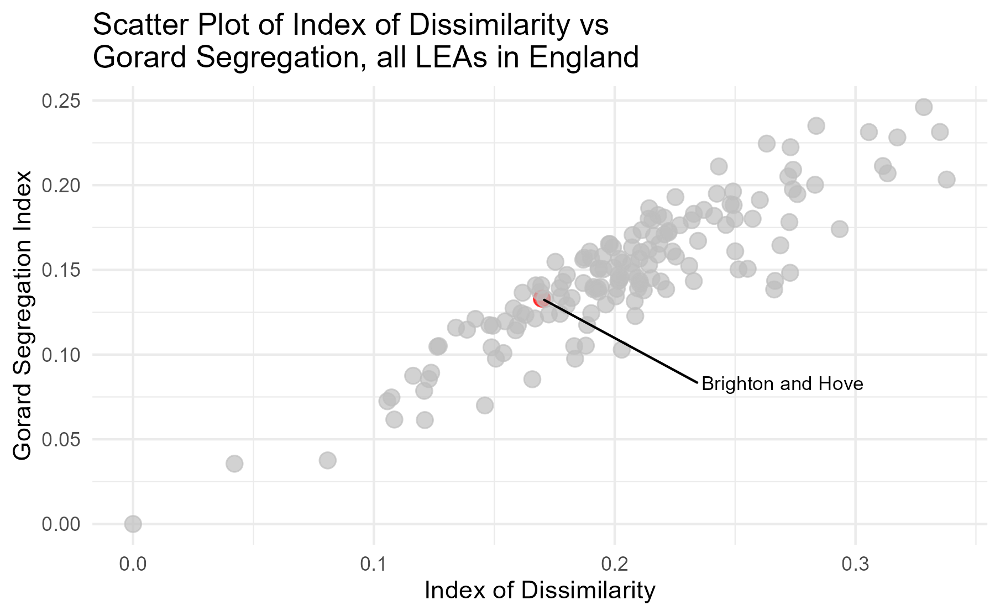

Brighton and Hove Secondary Schools Consultation - Fact Sheet

Premise 1 - Attainment Gap
BHCC Premise - Brighton and Hove has an attainment gap that needs narrowing. It has below average attainment for disadvantaged students.
On attainment of disadvantaged students - False. On the gap - True, it exists and is relatively large, but because non-disadvantaged students are very high achievers.
Fact 1 - Attainment Gap
In 2024, all students in Brighton and Hove - both disadvantaged and non-disadvantaged - achieved ABOVE the national (median) average when compared to other Local Education Authorities in England.
There is an attainment gap between disadvantaged and non-disadvantaged pupils in every Local Authority in England. Brighton’s is relatively large in absolute terms but is an artifact of non-disadvantaged students doing far better than average.

Premise 2 - Drivers of Attainment
BHCC Premise - economic advantage/disadvantage are the main drivers of results in the city
BHCC School Admission Arrangements 2026-27 - 3.9 “Better equality of outcomes – results not driven by economic advantage.”
False
Economic advantage/disadvantage is not the main driver of results in the city.
Fact 2a - What Prof Stephen Gorard actually says in the paper underpinning all of the council’s claims
Full paper here - https://journals.sagepub.com/doi/full/10.1177/2158244018825171
“Whether school composition is a phantom or not, the school-level variables tell a consistent story across the duration of schooling. Pupils do worse in schools with clusters of disadvantage or clusters of prior attainment. Put another way, if this composition is real, then schools should be as mixed as possible both socially and academically. This could lead to improved outcomes of between 0.05 and 0.15 of a standard deviation for almost no cost.”
Interpretation
In 2022-23 the mean school - level Attainment 8 score in Brighton was 47.56 (in England it was 45.9). The standard deviation was 6.92 (in England, 7.23).
0.15 of of 6.92 = 1.038 point improvement. 0.05 = 0.35 pt improvement.
For an undetermined additional level of mixing in schools, if the effect is not a ‘phantom’, the maximum improvement (if no costs involved in achieving additional mixing) we might expect for an average student is a 1pt improvement across equivalent 10 GCSEs taken. e.g moving from a C to a B in Maths or an E to a D in French, only.
Fact 2b - Drivers of Attainment
But for Brighton, Gorard’s effects might not even be valid. Examining state secondary schools in England experiencing the same concentrations of disadvantage as those in Brighton and Hove, there is NO RELATIONSHIP between variations in levels of disadvantage and levels of attainment or progress.


https://adamdennett.github.io/BH_Schools_Consultation/attainment_extra.html
Fact 2c - Drivers of Attainment
Far more important as a driver of attainment in Brighton (and in other secondary schools in England) is persistent absence. There is a strong negative correlation between persistent absence and both Attainment 8 and Progress 8 scores nationally and in Brighton and Hove.

Fact 2c - What Prof Stephen Gorard actually says in the paper underpinning all of the council’s claims
Full paper here - https://journals.sagepub.com/doi/full/10.1177/2158244018825171
“Whether school composition is a phantom or not, the school-level variables tell a consistent story across the duration of schooling. Pupils do worse in schools with clusters of disadvantage or clusters of prior attainment. Put another way, if this composition is real, then schools should be as mixed as possible both socially and academically. This could lead to improved outcomes of between 0.05 and 0.15 of a standard deviation for almost no cost.”
Interpretation
In 2022-23 the mean school - level Attainment 8 score in Brighton was 47.56 (in England it was 45.9). The standard deviation was 6.92 (in England, 7.23).
0.15 of of 6.92 = 1.038 point improvement. 0.05 = 0.35 pt improvement.
For an undetermined additional level of mixing in schools, if the effect is not a ‘phantom’, the maximum improvement (if no costs involved in achieving additional mixing) we might expect for an average student is a 1pt improvement across equivalent 10 GCSEs taken. e.g moving from a C to a B in Maths.
Premise 3 - Geographic Spread of Schools
BHCC Premise - Brighton and Hove should maintain the geographic spread of secondary schools in the city
BHCC School Admission Arrangements 2026-27 - 3.9 “Maintaining the geographic spread of secondary schools in the city”
Debatable
This is a party political desire to keep the current configuration of schools. The current geographic spread of schools relative to the city’s population is in part causing the viability issues for Longhill. Trying to keep a large Longhill in its current location is likely what is driving proposed PAN reductions at popular, oversubscribed schools elsewhere in the city.
Fact 3
Demand for schools varies significantly across the city. At the lower end, in the last 11-years, Longhill has received fewer total applications (1st, 2nd and 3rd choice combined) than its Published Admission Number (PAN) of 270. In-demand schools would normally expect considerably more total applications than places available as 2nd and 3rd choices are often allocated places elsewhere. For comparison, another single catchment school - Patcham High, has generally received around twice as many total applications than PAN.
Over the last 11 years (since 2013), Longhill’s total offers have trended down every year, and it has never achieved anywhere near 270 offers. It’s peak was in 2014 when it made 209 offers. Last year it made 94 offers.

Longhill’s challenges are multiple, but two stick out:
it is geographically remote
as a school with the capacity to admit 270 pupils a year, its site is far too large relative to the numbers of students it has attracted in recent years and will likely attract in the future if the trend continues the 10 year trajectory.

Modelling I carried out here suggests that if Longhill were moved further west to somewhere near the Race Course, it would be far more attractive to students - all other things being equal.
Fact 4
Brighton and Hove’s schools are already very mixed (relative to other LEAs in England) according to the relative proportions of disadvantaged and non-disadvantaged pupils across state secondary schools in the whole city.
Stephen Gorard (yes him again!) proposed an Index that some called the ‘Gorard Segregation Index’ which can be used to examine segregation of disadvantaged and non-disadvantaged students in schools. The formula for calculating it is here - https://sru.soc.surrey.ac.uk/SRU30.html
The plot below shows where Brighton sits relative to other LEAs in England on both the Gorard Segregation Index (for disadvantage) and a more standard dissimilarity index for the same variables. 0 = total integration of disadvantaged and non-disadvantaged students, 1 = total segregation. Brighton and Hove has a Gordard Segregation Index score of 0.13 - ranking it 44th BEST in the country for integration. 110 LEAs have schools which are more segregated.

Premise 5 - Greater Access to a Range of Schools
Choice